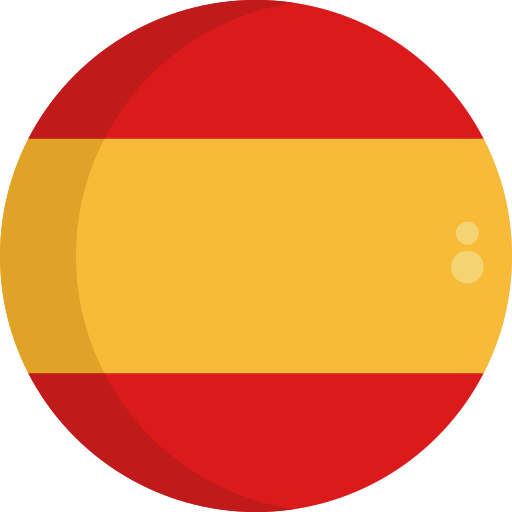
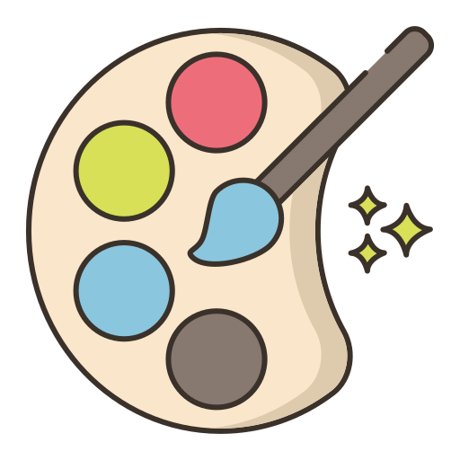
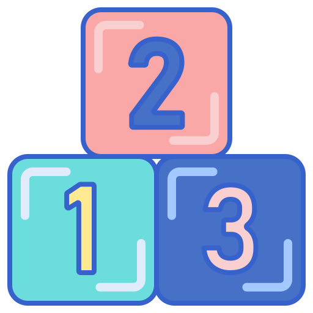

<ion-content>
  <div class="background-image">
    <app-animals (enviarDato)="playSonido($event)" *ngIf="animals"></app-animals>
    <app-numbers (enviarDato)="playSonido($event)" *ngIf="numbers"></app-numbers>
    <app-colors (enviarDato)="playSonido($event)" *ngIf="colors"></app-colors>
  </div>
  <div class="container-buttons">

  
  <ion-fab  horizontal="end" vertical="bottom">
    <ion-fab-button color="dark" title="Cerrar sesión" (click)="cerrarSesion()">
      <ion-icon name="log-out-outline" color="danger"></ion-icon>
    </ion-fab-button>
  </ion-fab>

  <ion-fab vertical="bottom" horizontal="center" slot="fixed">
    <ion-fab-button color="dark" style="font-size: 30px; width: 50px; height: 50px;">      
      
      
      
    </ion-fab-button>

    <ion-fab-list side="top">
      <ion-fab-button color="dark" style="width: 50px; height: 50px;" *ngIf="!this.espaniol" (click)="cambiarIdioma('es')">
        
      </ion-fab-button>
      <ion-fab-button color="dark" style="width: 50px; height: 50px;" *ngIf="!this.ingles" (click)="cambiarIdioma('en')">
        
      </ion-fab-button>
      <ion-fab-button color="dark" style="width: 50px; height: 50px;" *ngIf="!this.portugues" (click)="cambiarIdioma('po')">
        
      </ion-fab-button>
    </ion-fab-list>
  </ion-fab>

  <ion-fab vertical="bottom" horizontal="start" slot="fixed">
    <ion-fab-button color="dark" style="font-size: 30px; width: 50px; height: 50px;">
      
      
      
    </ion-fab-button>
    <ion-fab-list side="top">
      <ion-fab-button color="dark" style="width: 50px; height: 50px;" *ngIf="!this.animals" (click)="cambiarTema('a')">
        

      </ion-fab-button>
      <ion-fab-button color="dark" style="width: 50px; height: 50px;" *ngIf="!this.colors" (click)="cambiarTema('c')">
        
      </ion-fab-button>
      <ion-fab-button color="dark" style="width: 50px; height: 50px;" *ngIf="!this.numbers"
        (click)="cambiarTema('n')">
        
      </ion-fab-button>
    </ion-fab-list>
  </ion-fab>
</div>
</ion-content>